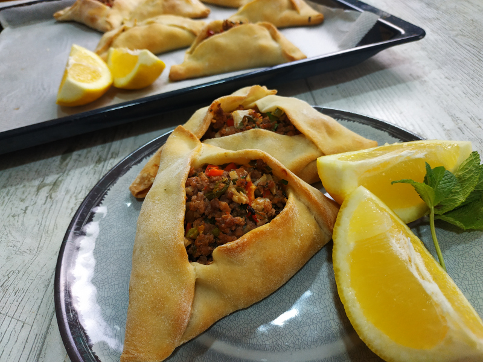

¿QUE SON LAS EMPANADAS ARABES?
Las empanadas árabes o Fatay, como prefieran llamarlas son un estandarte de la cocina egipcia, palestina y sirio-libanesa, no solo en esa zona, sino en el mundo entero.
Una de las características principales que diferencian a las empanadas árabes del resto de las empanadas mortales es la forma triangular que tienen.
Otra es ese toque ácido que les da el limón. Esto es una característica típica de la gastronomía de la región.
INGREDIENTES
Para la masa
- 500 gr de harina
- 15 gr de levadura
- 2 cucharadas de aceite de girasol o de maíz
- 200 cc de agua tibia
- Sal
Para el relleno
- 500 gr de carne picada (lo más finamente posible)
- 2 cebollas
- 1 cebolla de verdeo
- 1 tomate grande o 2 tomates chiquitos
- 1 pimiento morrón mediano
- Jugo de 3 limones
- 1 manojo de perejil
- Ají molido
- 1 cda de menta fresca
- 1 cda de Baharat (mezcla de 7 especias)
- Sal
- Pimienta negra
PASOS
- Poner a hervir agua en una ollita pequeña. Cuando llegue a ebullición poner el o los tomates por un corto tiempo
(más o menos un minuto) y sacar con una espumadera. Retirarle la piel y picar en cubitos pequeños.
- Ahora a pelar el pimiento morrón! Para eso se debe poner en una hornalla a un fuego fuerte y a medida que se vaya
quemando la piel se debe ir girando. Una vez que se queme todo, retirar la piel. Hay dos maneras: la primera es abajo
de un chorro de agua y la segunda es envolverlo en film apenas se lo saca del fuego y dejar que se enfríe allí. Una vez
que esté tibio retirar el film y la piel saldrá fácilmente. Picar chiquitito.
- Picar la cebolla, la menta y el perejil lo más chiquito que se pueda.
- Mezclar todos los ingredientes: la carne picada, el tomate, la cebolla, el pimiento morrón, las hierbas, las especias
y condimentos y la sal. Agregar el jugo de limón e incorporar muy bien.
- Cubrir la preparación con papel film y llevar al refrigerador de 8 a 10 horas para macerar. Yo les recomiendo dejarla
de una noche a la otra, o hacer la mezcla bien temprano así las podés tener para cenar!
- Una vez transcurrido el tiempo vas a notar cómo la carne cambió de color. Perfecto! Significa que se maceró y la carne
tomó el gusto que estábamos buscando! Ahora lo que se debe hacer es escurrir los jugos sobrantes: tanto el jugo de limón
como el jugo que la carne fue soltando durante las horas en las que estuvo reposando.
COMO HACER LA MASA PASO A PASO
- Para la masa para empanadas árabes, poner sobre mesada la harina en forma de corona, en el centro volcar la levadura
disuelta en un poco de agua tibia, mezclar un poco y recién ahí incorporar el aceite y la sal. Formar la masa mientras
se va agregando el resto del agua tibia. Debe quedar un bollo tierno.
- Dejar reposar la masa alrededor de 20 minutos.
- Luego, estirar la masa con un palo de amasar y cortar los discos del tamaño que más les guste.
- Reservar cubriendo con un trapo limpio (obvio) y húmedo. Esto es para que no se seque la masa para empanadas árabes.
Armemos las empanadas y disfrutemos: lo único que hay que hacer es rellenar los discos de masa y darle la forma triangular
clásica de la empanada árabe. Luego hay que colocarlas en una fuente de horno aceitada y cocinarlas a un horno precalentado
fuerte hasta que estén doradas.
Servir las empanadas árabes acompañadas de rodajas de limón y a disfrutar!
Volver al principio
volver a la página principal